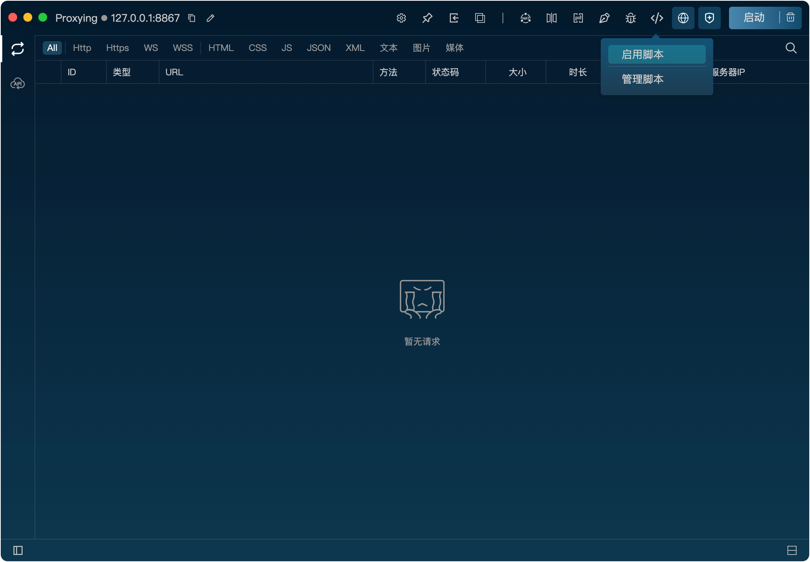
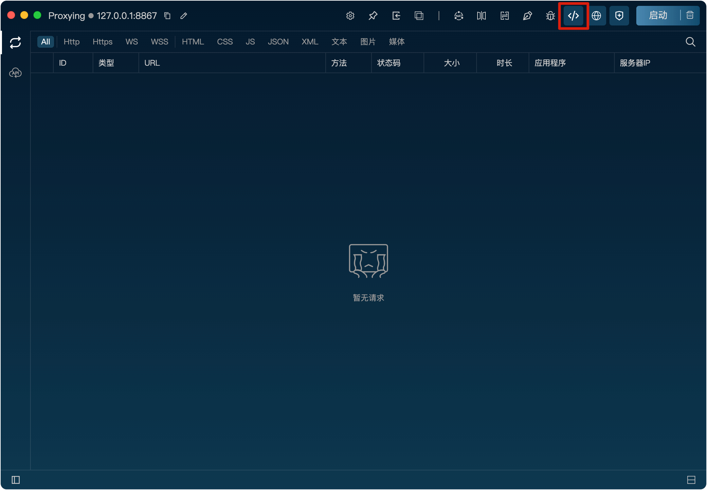
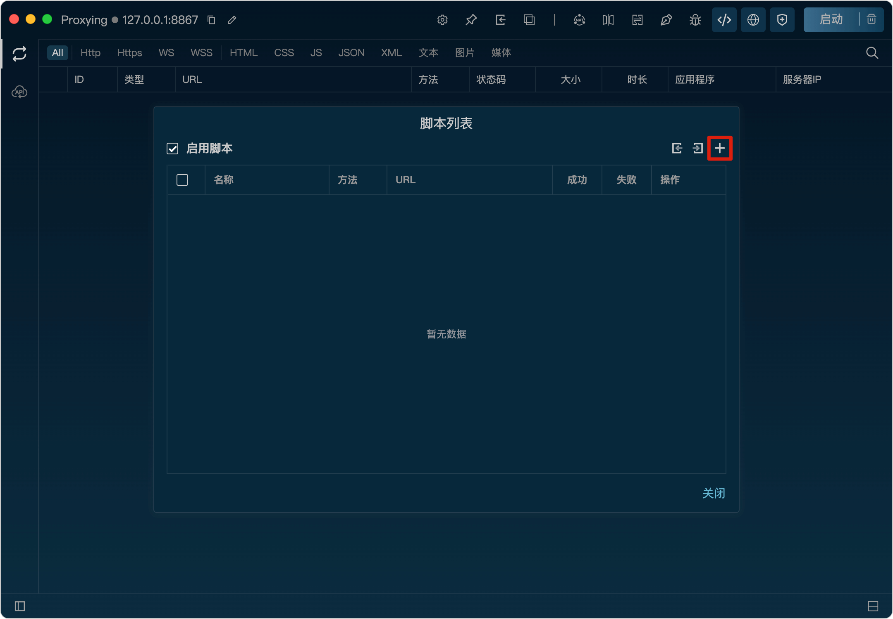
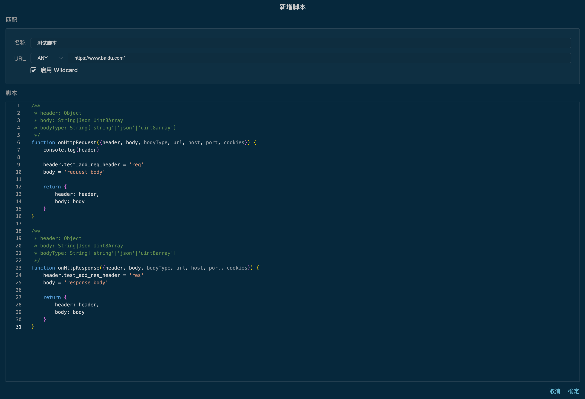

脚本
功能
脚本功能可以通过自定义JavaScript代码来修改请求和响应，从而实现对请求和响应的灵活控制和处理。
开启脚本功能
将鼠标悬浮到脚本图标上，点击“启动脚本”按钮即可开启脚本功能。

开启后，脚本图标会高亮显示，表示脚本已开启。

新增脚本规则
1、将鼠标悬浮到脚本图标上，点击“规则管理”按钮打开脚本规则列表。
2、在规则列表弹框里，点击“+”按钮，打开新增规则弹窗。

3、在弹窗里，填写匹配规则、脚本代码，点击“确定”按钮即可新增规则。匹配规则支持wildcard。
脚本方法
脚本里可以定义两个方法：
onHttpRequest({header, body, bodyType, url, cookies})：
在请求发送到服务器之前调用，返回的{header, body}为修改后的请求头和请求体。
onHttpResponse({header, body, bodyType, url, cookies})：
在响应返回给客户端之前调用，返回的{header, body}为修改后的响应头头和响应体。
两个方法的参数说明：
header：
请求或响应的头信息，为一个Object对象。
body：
请求或响应的体内容，为一个字符串或Object对象或者Uint8Array对象。
bodyType：
请求或响应体的类型，可能的值为"string"、"json"、"uint8array"等。
url：
请求的完整URL地址。
cookies：
请求头或响应头的Cookie信息，为一个对象。
例：下面的脚本代码会在请求发送到服务器之前添加一个自定义的请求头"test_add_req_header: req"，并且把请求体替换成“request body”。在响应发送到客户端之前添加一个自定义的响应头"test_add_res_header: res"，并且把响应体替换成“response body”。

代码中可以使用console.log()方法打印日志，日志会显示在listen客户端的执行记录中，方便调试脚本代码。代码中如果报错，会在执行记录中显示错误信息，方便排查问题。
点击脚本规则列表中的历史记录图标按钮，可以查看该脚本规则的执行记录。
注意：脚本代码执行时可能会影响请求和响应的性能，建议只在必要时使用脚本功能，并确保脚本代码的正确性和安全性。